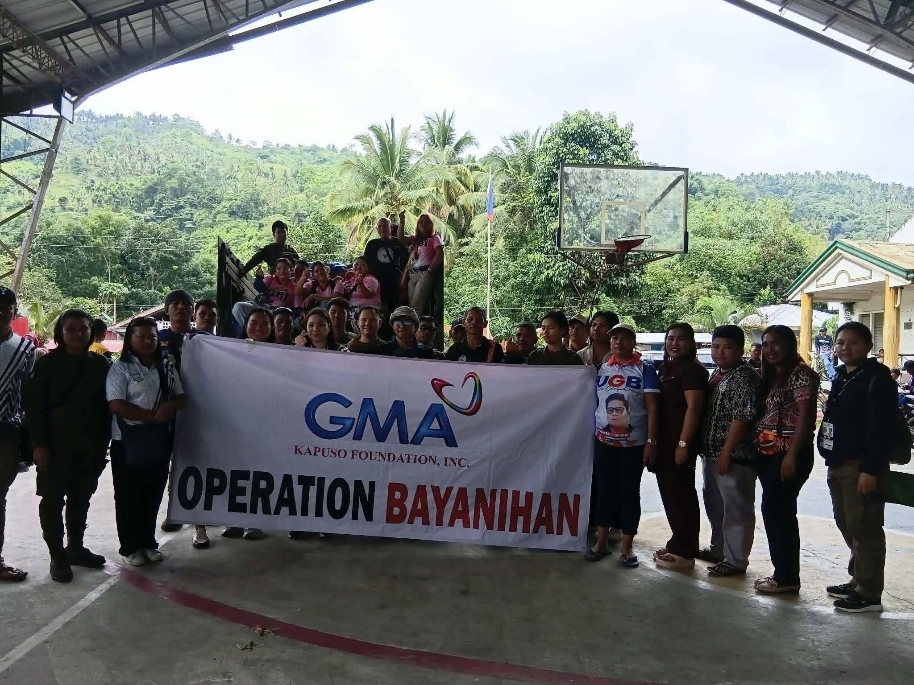
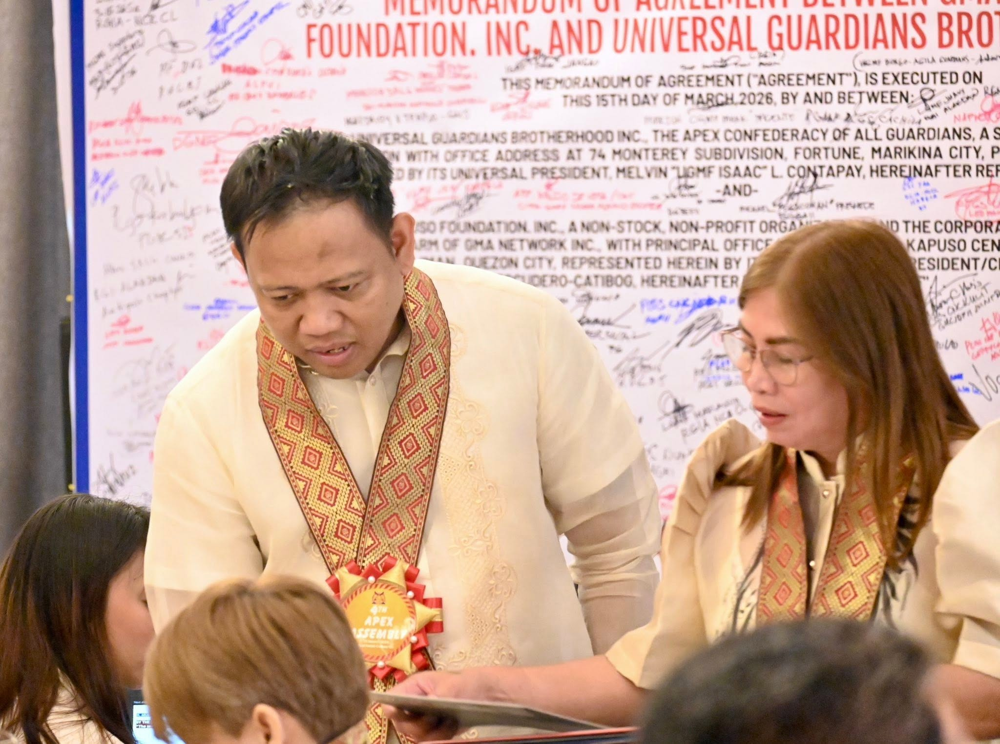
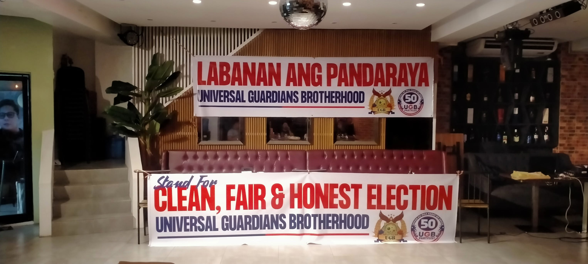

UGB News
Community Service in Action
A sample news feature presenting UGB community participation and service activities through documented stories and photographs.
Explore UGB News →
UGB Information Center
One organized home for official news, community stories, announcements, reports, organizational history, articles and timely updates from UGB.
UGB Newsroom
Different information deserves the right place.
The proposed UGB publication center separates official announcements, stories, reports and long-form materials into clear channels while keeping everything accessible from one page.
Proposal presentation — sample publication content and layouts.Featured
Sample editorial presentation using existing UGB materials. Final titles, dates and articles can be replaced with approved publication content.
A sample news feature presenting UGB community participation and service activities through documented stories and photographs.
Explore UGB News →
UGB PressA proposed space for official organizational releases, partnership information and statements.
Explore UGB Press →
UGB JournalLong-form educational and advocacy materials can be organized within the UGB Journal.
Explore UGB Journal →Publication Directory
Each channel has a clear editorial purpose, making information easier to publish, find and understand.
Human-centered stories, interviews, experiences and perspectives from members and communities.
Organizational news, activities, developments and important stories from across UGB.
Formal press releases, official statements, partnership announcements and public communications.
Notices, schedules, reminders, event information and announcements members need to see quickly.
Program reports, activity summaries, project documentation and organizational accomplishments.
Significant moments, milestones and historical records that preserve the story of UGB over time.
Longer educational, advocacy and insight articles for members, communities and the public.
Updates from chapters, communities and field activities brought together in one channel.
Short, timely information for developments that do not require a full article or formal release.
Proposed Publishing System
In the complete operating system, authorized users can eventually manage publication content from a protected workspace instead of manually editing public pages.
For this proposal demonstration, publication cards and buttons are static. Workflow and publishing controls represent the planned system direction.
Publication Preview
Static sample cards for proposal presentation. These can later be populated from approved UGB publication data.
Community service and volunteer activity presentation.
View Channel →Official organizational and partnership communications.
View Channel →Announcements, schedules and important reminders.
View Channel →Long-form awareness and educational material.
View Channel →